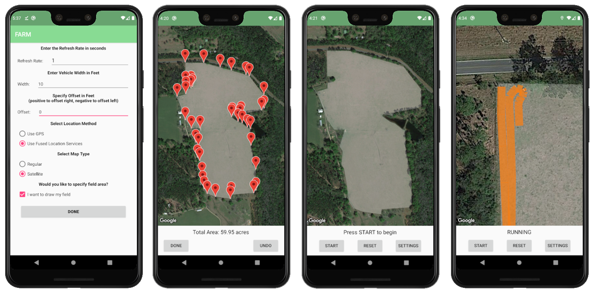

Field Automated Routing Module (FARM)
An Android path tracking application for field management
Purpose
Often, it can be hard for farmers to track their progress when fertilizing or planting a field.
Unlike during plowing, there are no furrows left behind for the tractor operator to see whether
or not they are overlapping with previous paths. This can lead to under- or over-fertilization
which can cost money or result in inefficient field use.
The FARM application looks to solve this. By allowing the user to plot their location over
a satellite view of their field, they can be sure that they are properly covering the area.
The app allows the user to input the width of their machinery to ensure that the path plotted on the map
represents the actual ground covered. Additionally, the user can define the area of their field so
that is is highlighted on the map for easy reference.
Unlike complicated GPS devices and expensive software, the FARM app is over source and free to download and use.
All you need is an Android smartphone running Android 5.0 (Lollipop) or later. Read below for instructions on how
to install the app on your device.
Downloading and Installing the App (Android Only)
While the FARM app is not available on the Google Play store, you can easily download it below.
Download the APK file by clicking on the button below. It is easiest to download this directly
from your Android phone, but you could download it from your PC and transfer it over to your
Android phone's storage as well. Once the APK file is on your Android phone, navigate to the location
of the downloaded APK file on your phone and click it. If you get a message about needing to change
your settings, you may have to go to your settings and allow apps from unknown sources
(go to "Settings > Security > Unknown Sources" and click the check box). Then go back to the downloaded
APK file and click it again if needed. You will be asked if you want to install the application. Click "Install".
The app will then install on your phone and will be available in your app drawer with all of your other apps.
Click here for a visual guide.
{kind=link}
Download the App
Using the Program
On startup, the program displays the available settings:
If you choose to draw the map, you can do so on the next screen by tapping the map wherever the edges of the field are. The map can be zoomed and moved around while this is being done. When the polygon is being drawn around the field, the area of the selected field is shown at the bottom of the screen in acres. Once you are done drawing the field, tap the "DONE" button. (If you change your mind and decide not to draw the field, just do not add any points and then click "DONE.") At this point, the "START" button can be pressed and the app will begin tracking your location as you move around the field. The app can be paused and resumed if needed. 